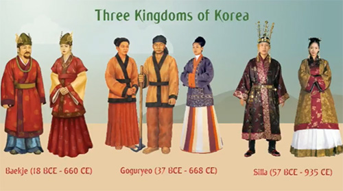
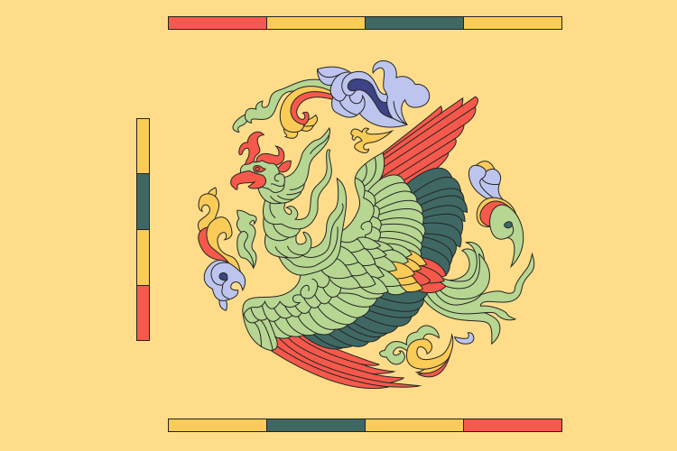
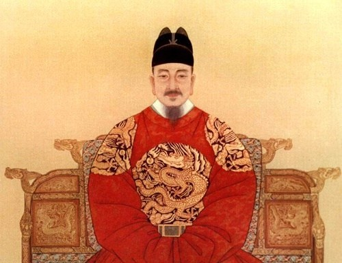
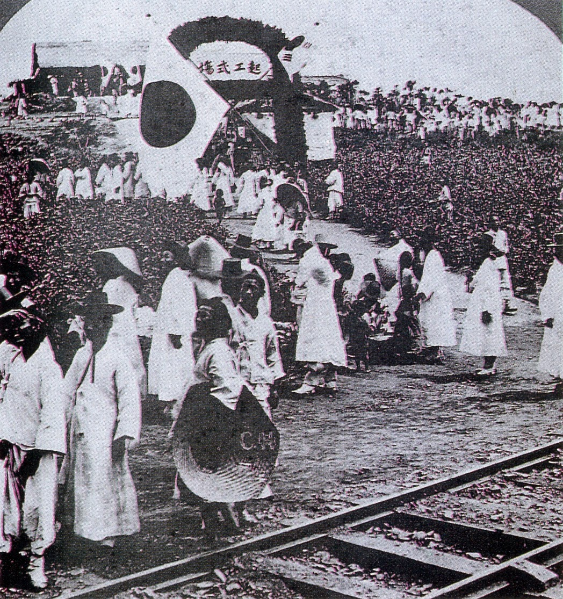
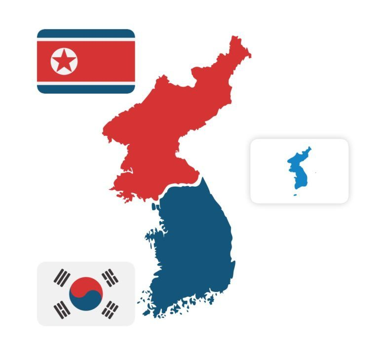

Los umbrales de la historia coreana suelen situarse en el año 2333 a.C. cuando el rey Tangun (también llamado Dangun) fundó el reino de Joseon (a menudo conocido como "Gojoseon" para evitar la confusión con la dinastía del siglo XIV del mismo nombre; el prefijo go significa "viejo" o "anterior"). Después de numerosas guerras, este reino se desintegró.
La antigua Corea pasó a albergar una serie de ciudades-estado en constantes guerras, que aparecían y desaparecían de manera constante. No obstante, tres reinos, Baekje, Koguryŏ y Silla se fortalecieron y entre los tres dominaron la escena histórica de Corea por más de doscientos años, en el periodo conocido como los Tres Reinos de Corea. En el año 676, Silla logró unificar casi todo el territorio coreano, con excepción del reino de Balhae. El dominio de estos dos reinos sobre todo Corea y parte de Manchuria dio origen al Periodo de los Estados Norte y Sur.
Tras su decadencia, en 918 el general Wang Geon fundó el reino de Goryeo (o Koryŏ, de donde proviene el nombre de Corea). En el siglo XIII, la invasión de los mongoles debilitó a Goryeo: después de casi treinta años de guerra, el reino conservó el dominio sobre todo el territorio de Corea, aunque en realidad sólo era un tributario más de los mongoles.
Al derrumbe del Imperio Mongol, le siguieron una serie de luchas políticas y tras la rebelión del General Yi Seong-gye en 1388, la dinastía Goryeo fue reemplazada por la dinastía Joseon. Entre 1592 y 1598, los japoneses invadieron Corea, después de que los Joseon se negaran a brindarle paso seguro al ejército japonés, liderados por Toyotomi Hideyoshi, en su campaña para la conquista de China. La guerra finalizó cuando los japoneses se retiraron después de la muerte de Hideyoshi.
En el siglo XVII, Corea fue finalmente derrotada por los Manchú y se unió al Imperio Qing. Durante el siglo XIX, gracias a su política aislacionista, Corea ganó el nombre del "Reino ermitaño". La dinastía Joseon trató de protegerse contra el imperialismo occidental, pero fueron obligados a abrir sus puertas al comercio. Después de las guerras Sino-Japonesas y de la guerra Ruso-Japonesa, Corea quedó bajo el dominio colonial japonés (1910-1945).
En 1948, como consecuencia de la división de la península entre los soviéticos y los estadounidenses, surgieron dos nuevas entidades: Corea del Norte y Corea del Sur. En el norte, un guerrillero antijaponés y activista comunista, Kim Il-sung, obtuvo el poder a través del apoyo soviético, y en el sur, un líder político exiliado de derecha, Syngman Rhee, fue nombrado presidente.